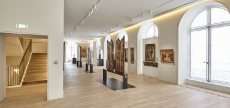
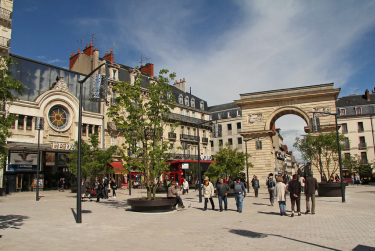
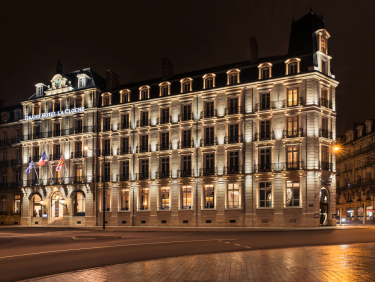

Visite guidée au programme d’aujourd’hui! Commune française, capitale de la Bourgogne, cette ville compte actuellement environ 254000 habitants en comptant la périphérie. C’est une ville d’histoire, de cultures et de saveurs, comme avec l’exemple de la moutarde de Dijon. J’ai décidé de vous présenter ce lieu car j’y vis depuis de nombreuses années désormais. C’est un lieu important dans ma vie car c’est ici où mon périple a commencé, cependant comment suis-je attéri ici, je n’en ai pas la moindre idée. Dijon, c’est d’abord un mode de vie. De nombreux monuments sont présents dans la ville, comme l’emblématique place de la Libération, où commence notre visite. De cette large place animée nous pouvons observer la mairie de Dijon, liée avec le musée des Beaux-Arts. Dans la soirée la place se remplit et les terrasses deviennent complètes. Les fontaines vibrent au rythme de la musique d’ambiance des bars. À Noel, un grand sapin trône au centre de la place et de nombreux cabanons de vendeurs de churros et de bretzels apparaissent.
En passant à certains coins de rue, l’ambiance devient différente. En remontant la Rue de la liberté, rue des rendez-vous shopping entre amis les après-midis et entre les cours, nous longeons les nombreux magasins. Une autre place se présente à nous, la place François Rude, alias la Place du Carrousel, lieu phare des animations et du manège d’époque.

Continuons notre visite pour arriver jusqu’à la Place Darcy où la porte Guillaume figure en porte-étendard. Cette place animée fait le lien principal avec les autres endroits de la ville grâce à son réseau de tram qui s’étend jusqu’aux périphéries de la ville.
Arrêtons-nous un instant sur cette place. De loin nous pouvons observer le prestigieux Grand Hôtel La Cloche. Lieu de luxe et de raffinemment, j’y accorde une importance particulière, en liant mon ambition à l’image de cette édifice.
Il faut notamment savoir que Dijon a été classée comme la ville la plus verte de France selon Forbes France. Le Lac Kir en est un bon exemple. De nombreux parcs sont présents dans la ville, comme le Jardin Darcy ou le Jardin de l’Arquebuse, près de la gare.
Retour en haut !